Замок Осака (яп. 大坂城) — японський замок, який знаходиться в місті Осака, префектура Осака. Грав важливу роль в японській історії кінця XVI — початку XVII століть.
В 1995 році Замок Осака визнаний важливою культурною спорудою та взятий під охорону японським урядом.
Опис
Площа замку та тринадцяти призамкових споруд становить близько 60,000 м². Замок розташований на вершині кам'яного насипу, в фундамент якого закладені величезні валуни, найбільші з яких досягають шести метрів у висоту та чотирнадцяти метрів завширшки. Довжина кам'яних стін головного, другого та третього рядів становить близько 12 км. Замок має п'ять поверхів; ще три підземні рівні знаходяться в глибині насипу.
Історія
Замок був побудований в 1585-1598 роках полководцем Тойотомі Хідейосі за зразком замку Адзуті, який за десять років до цього збудував для себе Ода Нобунага. Під час правління Хідейосі на прилеглій до Осацького замку території розташовувалось призамкове містечко, попередник сучасної Осаки, що було політично-економічним центром Японії кінця 16 століття.
У 1614 році, під час війни Тойотомі Хідейорі, сина Хідейосі, з сьогуном Токугавою Іеясою, замок витримав облогу двохсоттисячного війська. Токугава не зміг взяти фортецю, але йому вдалося засипати замкові рови — ключовий елемент фортифікаційної системи Осаки. Наступного року Хідейорі зробив спробу відновити зовнішній рів та наповнити його водою. У відповідь на це Токугава здійснив похід до Осаки і захопив замок. Головна замкова башта згоріла. Хідейорі та його мати наклали на себе руки. Місце їх загибелі відмічене пам'ятним знаком.
У 1620 році Токугава повелів відбудувати та розширити замок в Осаці. У 1665 році блискавка, яка ударила в головну башту, призвела до руйнівної пожежі. У подальші роки замок був відновлений, проте знов погорів в 1868 році, під час подій Реставрації Мейдзі. На початку XX століття від замку залишилися одні руїни. Головна башта піднялася з руїн та набула сучасний вигляд лише в 1931 році, коли місцева влада провела її капітальну реконструкцію з використанням залізобетону.
В кінці Другої світової війни споруди замку постраждали від американських авіанальотів, але були відновлені в 1995-1997 роках.
В даний час об'єкт відкритий для відвідин туристів; інтер'єри головної башти — сучасні. Поруч з замковим садом є стадіон, на якому виступають музиканти світового рівня, які гастролюють по Японії.
Деталі подорожі
Терміни проведення: з 21 жовтня по 23 грудня 2019 р
Розмір групи: 14 осіб
Вид відпочинку: подорож, знайомство з автентичними культурами, фотографія.
Вартість участі: 2560 євро (без міжнародного перельоту)
Сюди включено:
проживання в комфортабельних готелях рівня 3-4 зірки (двомісне розміщення з сніданками;
проживання в рекані - готель в традиційному японському стилі ;
квитки JR pass на швидкісні поїзди;
трансфери з аеропорту за програмою подорожі;
переїзд на приватному автобусі, послуги водіїв та всі необхідні трансфери і переїзди;
всі вхідні квитки на пам'ятки згідно програми подорожі;
послуги англо-україномовних експертів команди "Rurouni";
 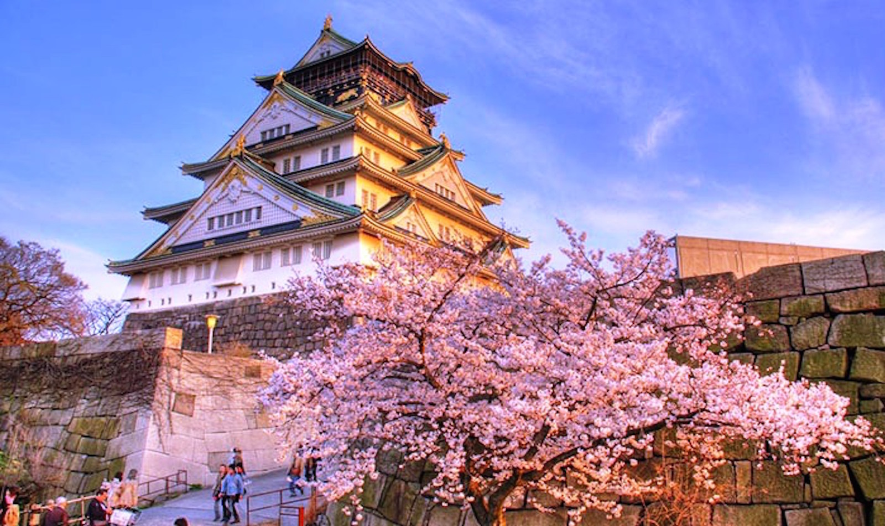
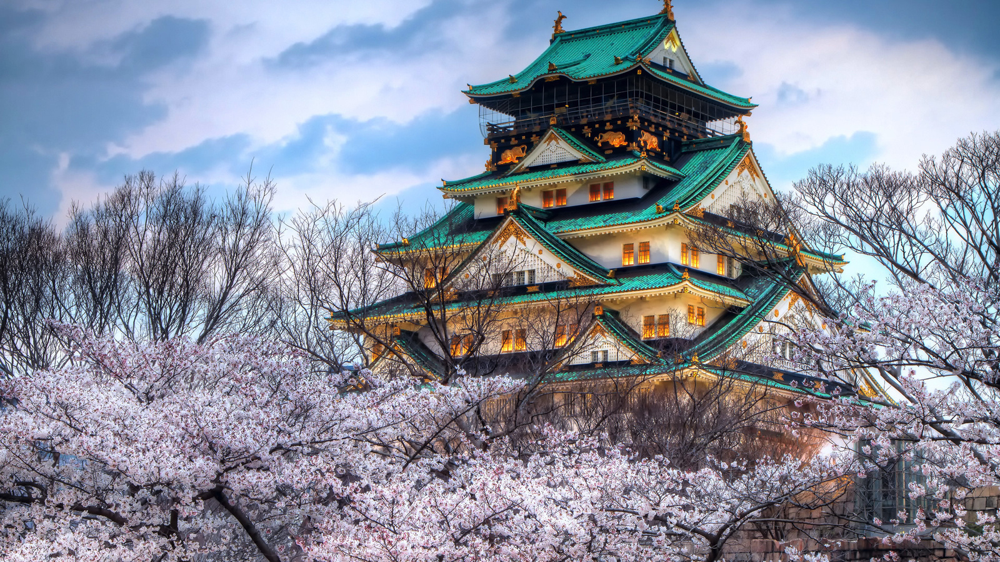
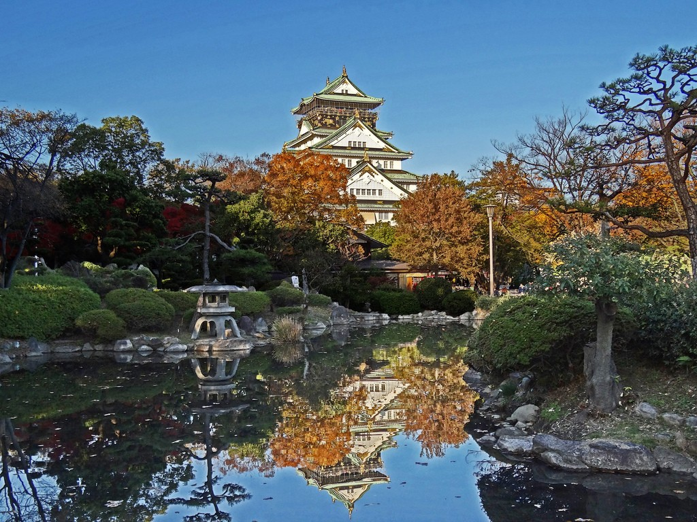
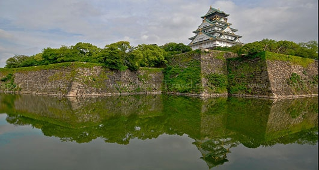
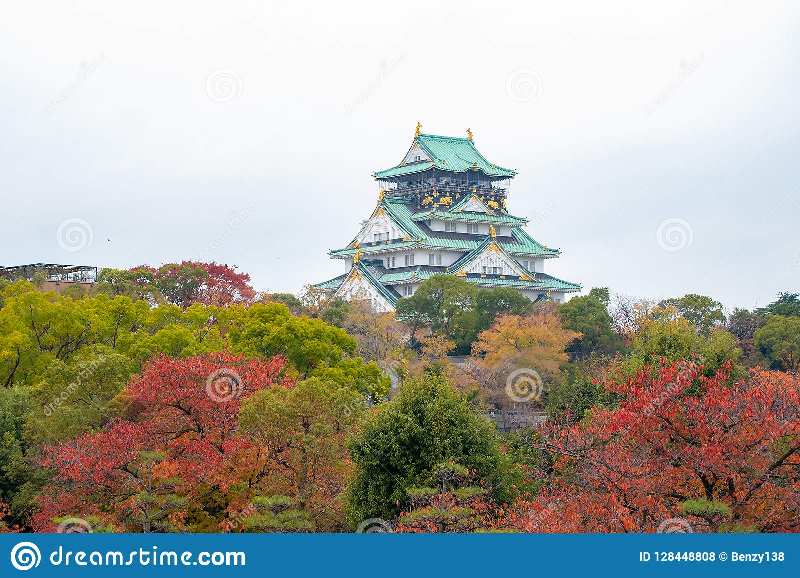
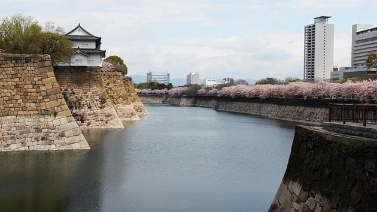
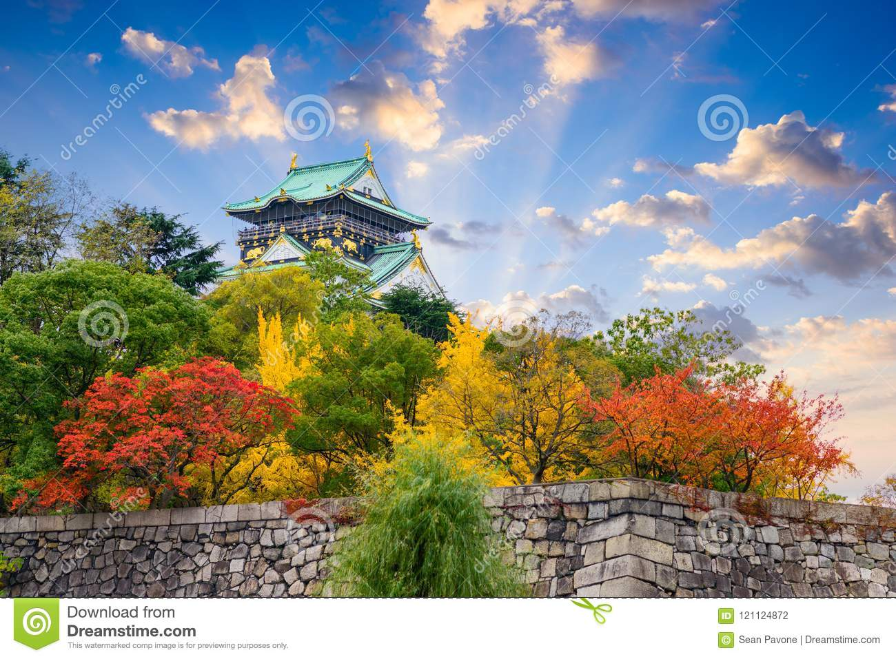
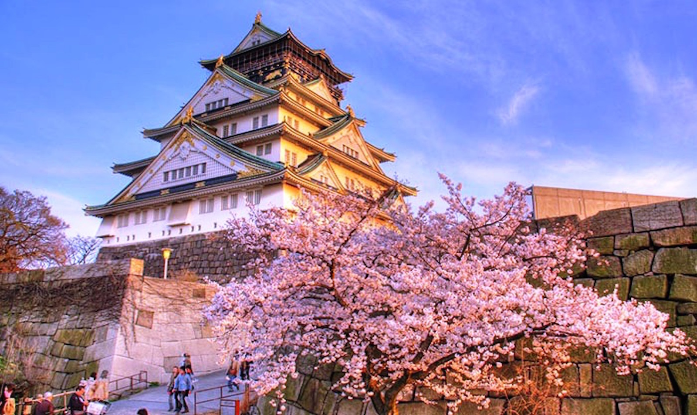
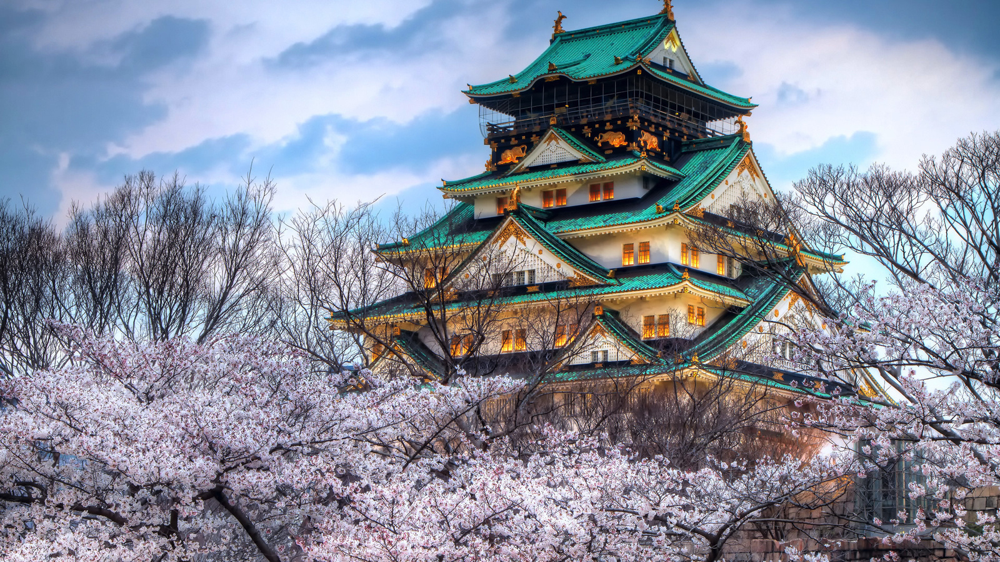
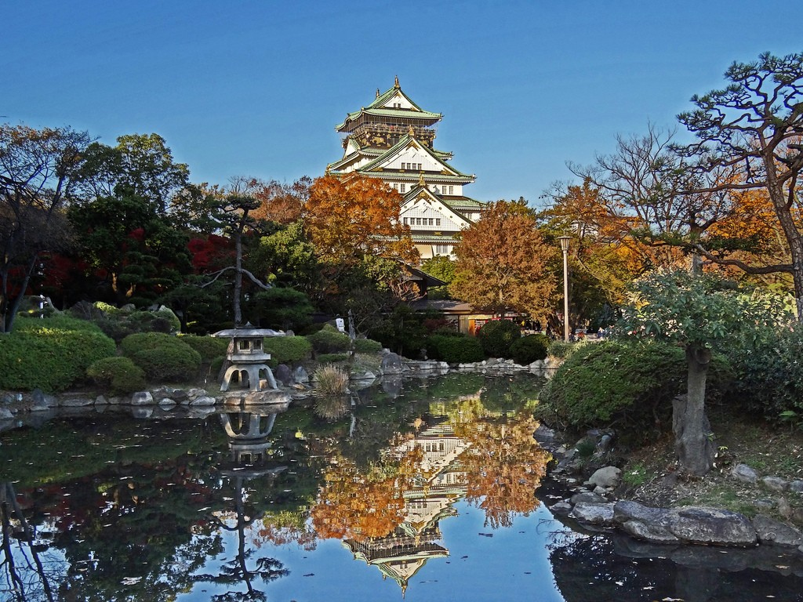
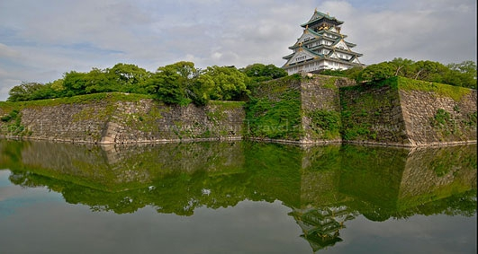
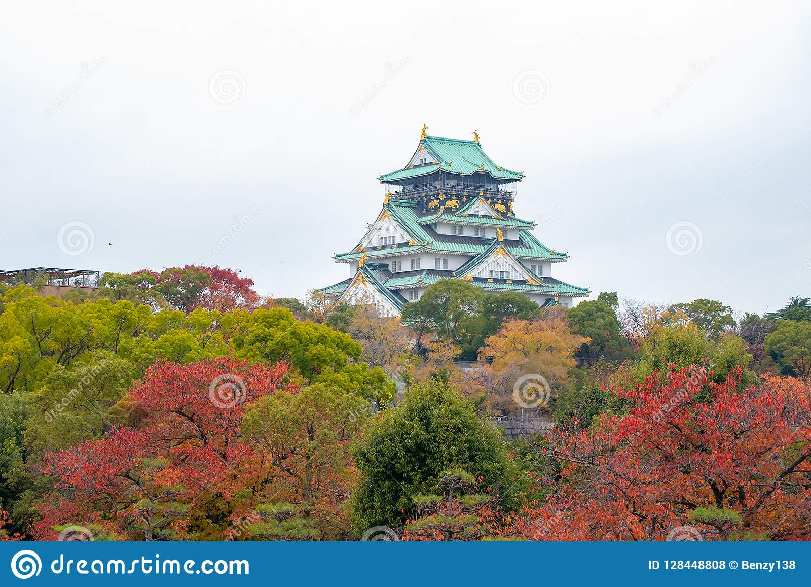
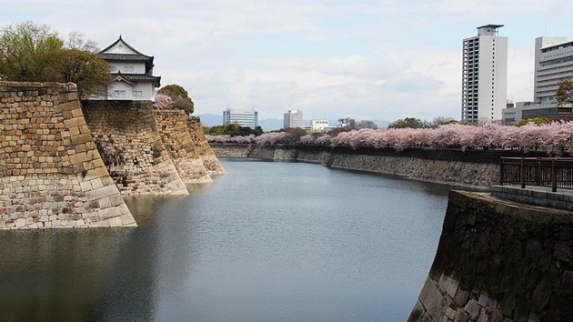
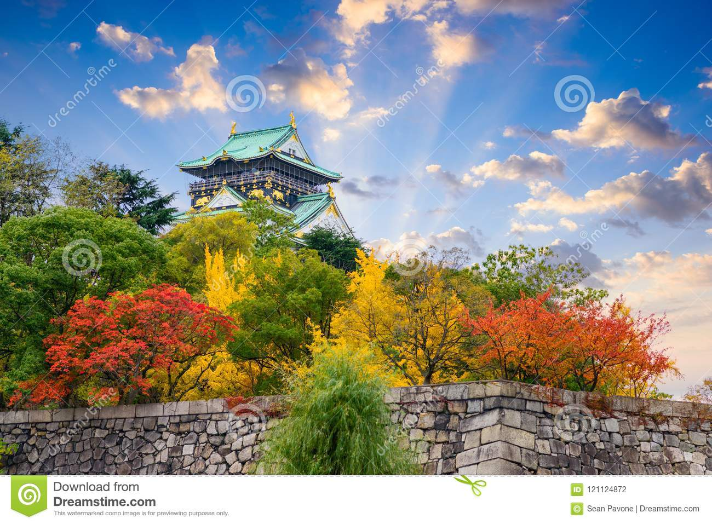